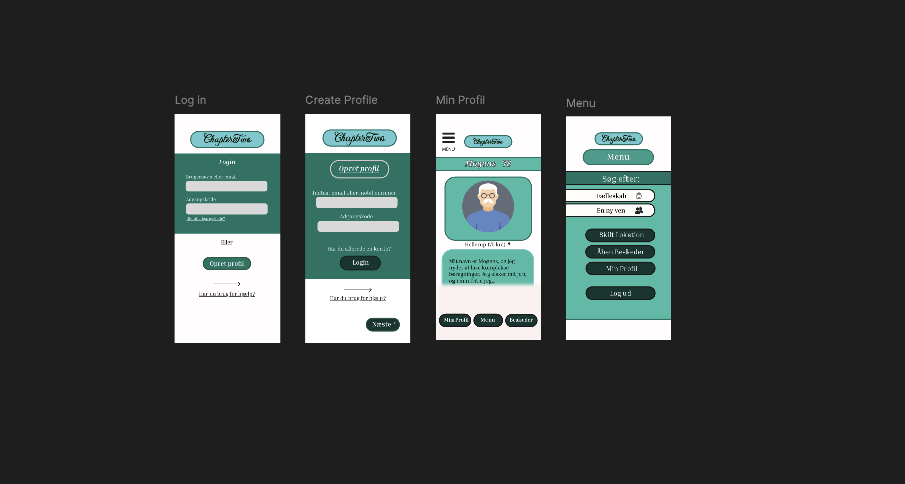

PROJEKT INFO
I dette projekt udviklede jeg en app-design prototype med fokus på æstetik, funktionalitet og brugeroplevelse. Det handlede om en dating app til mennesker over 70, hvor jeg arbejdede med designprincipper, farver og typografi for at skabe en intuitiv og indbydende brugergrænseflade.
Jeg undersøgte visuelle trends inden for app-design, blandt andet relaterede dating apps.
Jeg arbejdede med designprincipper, og researchede om brugeradfærd og behov.
Jeg skabte en prototype for at teste og validere designideer.
Jeg lærte at skabe app-design løsninger, der kombinerer æstetik og funktionalitet, og som er skræddersyet til målgruppens behov og præferencer.